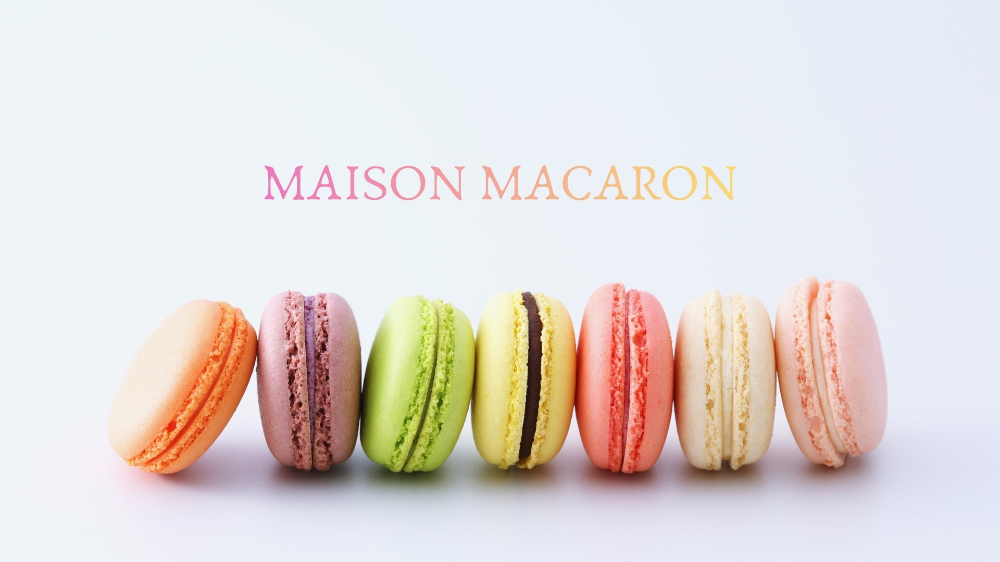
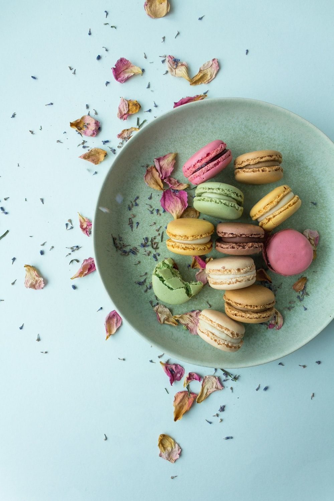
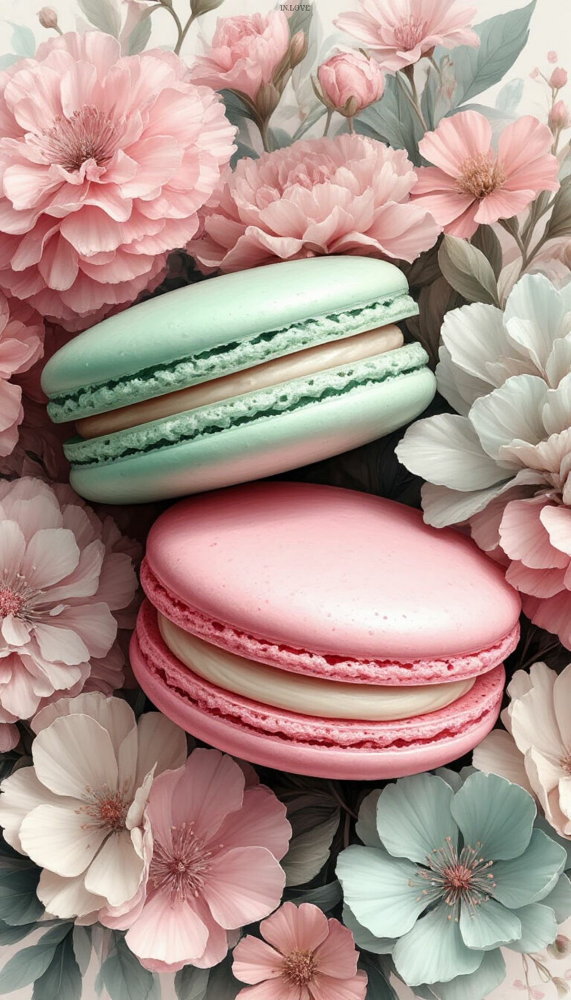
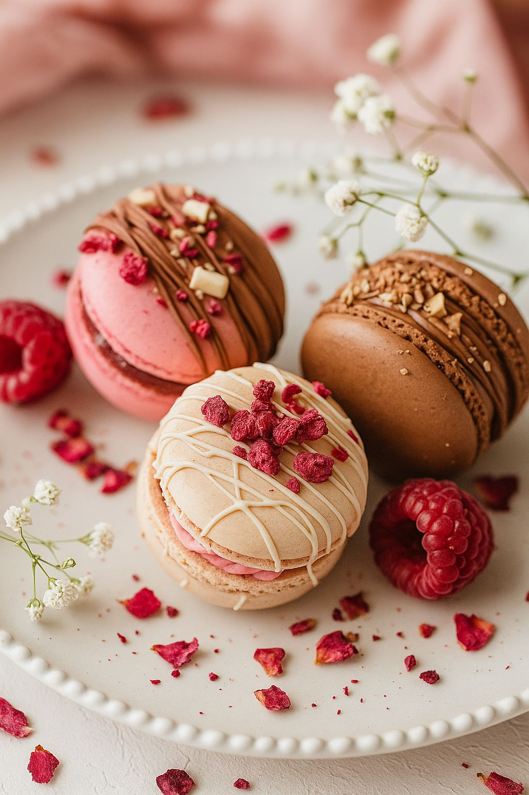
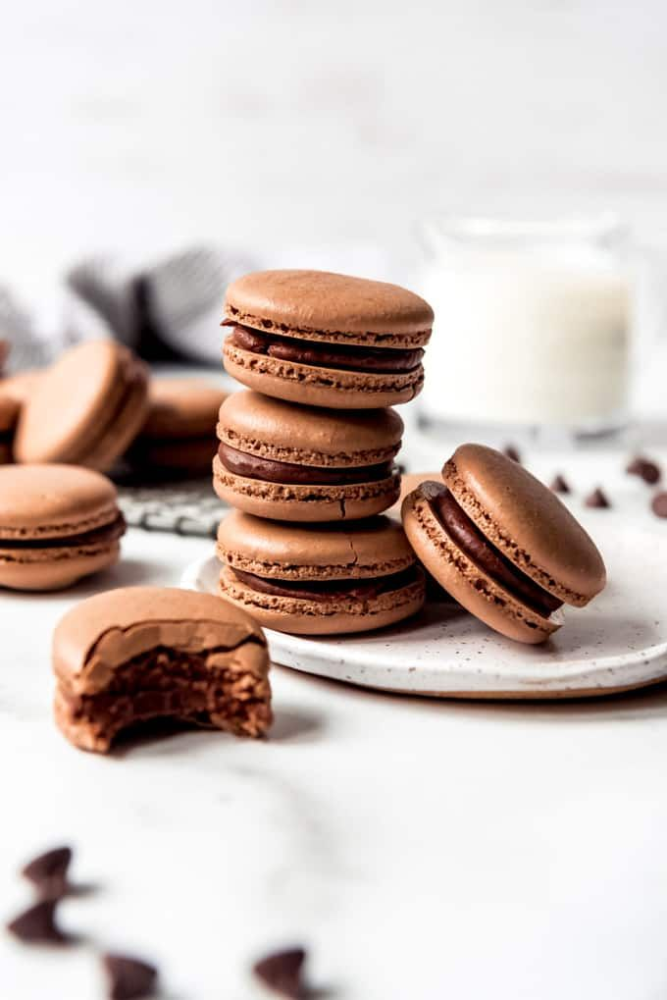
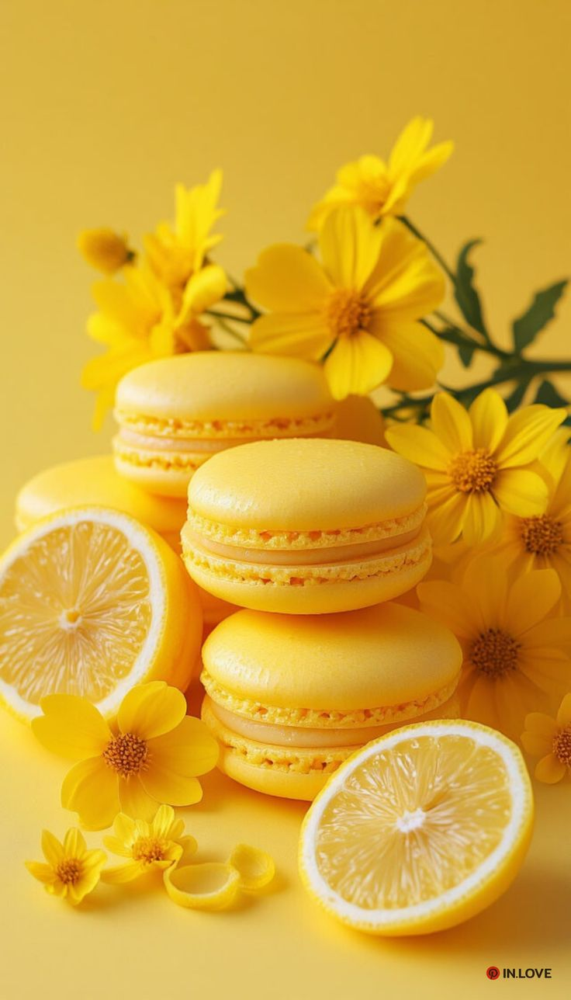
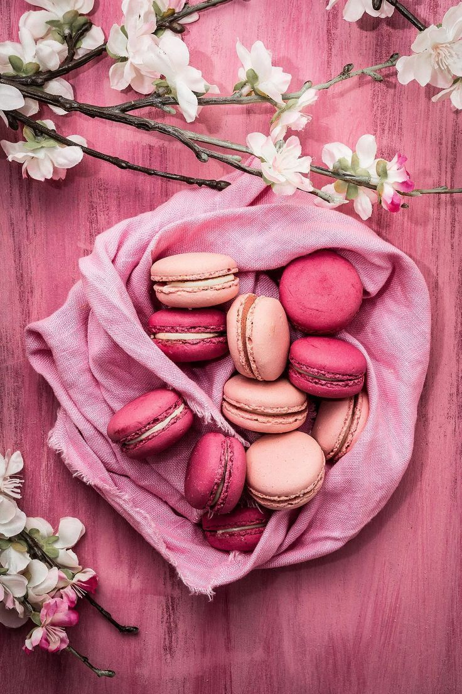
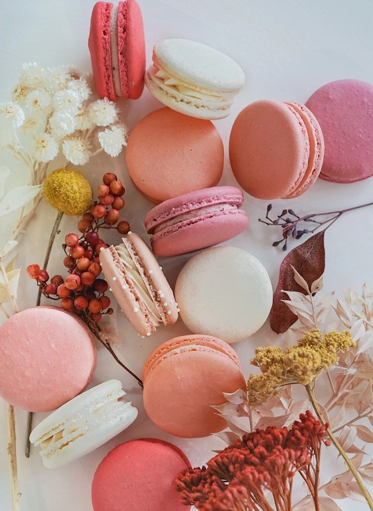

Ingrédients premium
Nous sélectionnons des matières premières de qualité pour des saveurs raffinées.
Bienvenue à Maison Macaron

Découvrez l’univers délicat de Maison Macaron !
Nos douceurs artisanales, préparées avec passion et des ingrédients de qualité,
vous invitent à une expérience sucrée inoubliable.
Commandez dès maintenant et laissez fondre le plaisir en bouche !
Nous sélectionnons des matières premières de qualité pour des saveurs raffinées.
Chaque macaron est préparé à la main dans notre atelier artisanal.
Des recettes classiques et originales pour tous les palais.
Un accueil chaleureux et un suivi soigné de vos commandes.
Maison Macaron est née d’une passion pour la pâtisserie française et les douceurs raffinées. Au fil des années, nous avons développé un savoir-faire unique pour créer des macarons à la fois délicats, colorés et généreux en goût.
Chaque fournée est réalisée en petites quantités afin de préserver la fraîcheur et la qualité. Notre ambition : offrir à chacun un moment de douceur, à partager en famille, entre amis ou lors de vos événements spéciaux.






